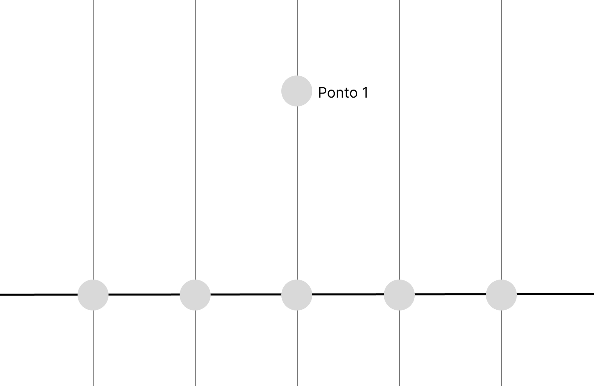
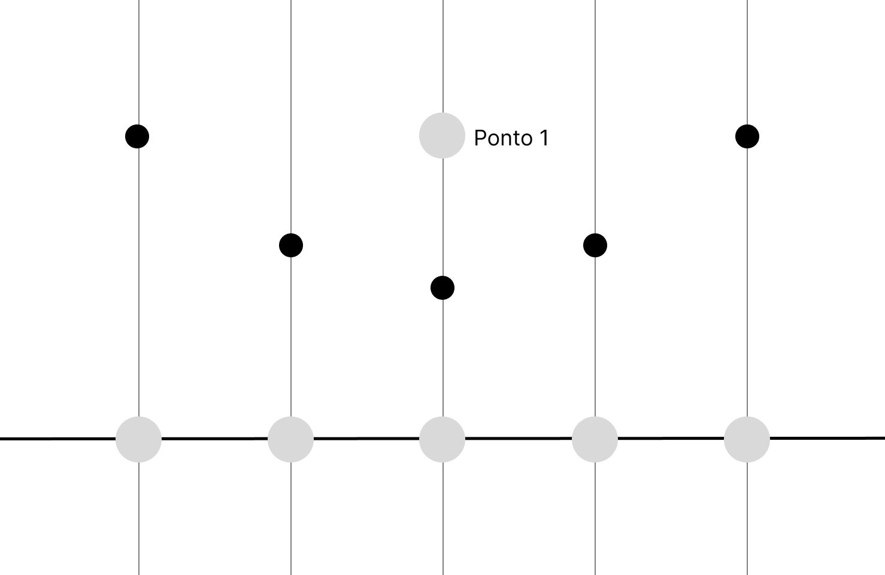
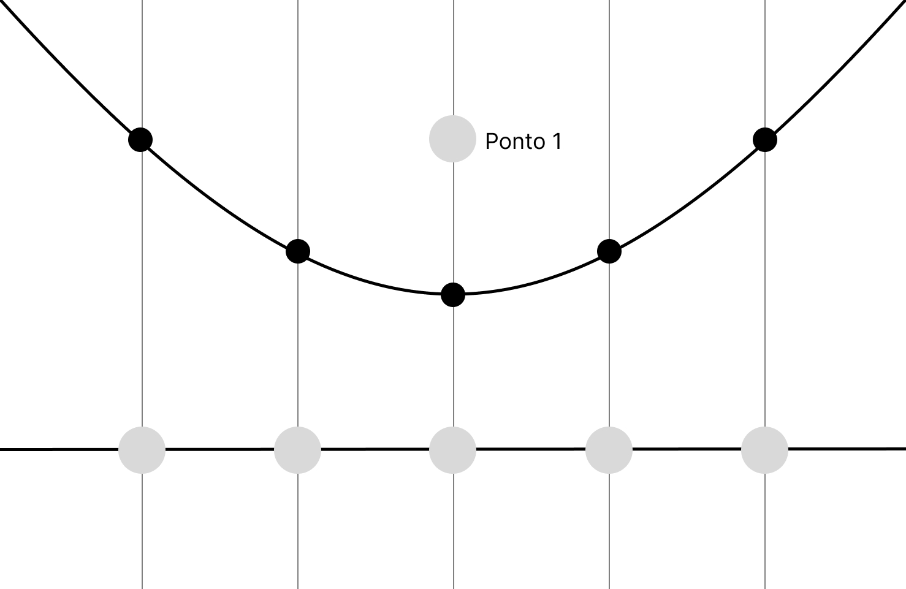
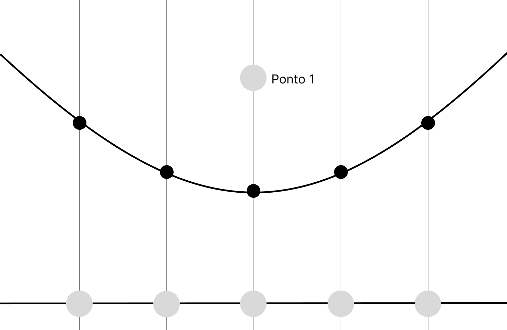

Uma das formas mais eficientes de gerar diagramas de Voronoi é com o algoritmo de Fortune. Para entender seu funcionamento, vamos partir de uma ideia diferente — mas calma, no fim tudo fará sentido.
Vamos começar com o exemplo abaixo:
Pergunta
Pegue um papel e caneta e desenhe um ponto pequeno (chamaremos de ponto1), com uma linha horizontal poucos centimetros abaixo e desenhe 5 pontos sobre essa linha (Facilita se voce colocar o ponto do meio exatamente embaixo do ponto1). Agora tente encontrar os pontos de equidistancia entre o ponto original e os pontos sobre a linha.
Vai ficar algo parecido com isso:

Agora, tente encontrar os pontos equidistantes entre os pontos da linha e o ponto 1
Resposta
Seu diagrama deve ficar algo parecido com:

Pergunta
Você consegue perceber alguma relação entre esses pontos? Que formato esse padrão formaria?
Resposta
Voce deve ter concluido que os pontos de equidistancia formam uma parabola

Agora partimos para um segundo instante. Vamos imaginar que a sweeping line desceu um pouco, para um pouco mais longe do nosso ponto 1.
Pergunta
Tente pensar no que vai acontecer com os pontos e então com a parabola.
Sera que ela vai abrir/fechar mais? Sera que vai permanecer igual?
Se nao estiver conseguindo visualizar, use o papel e compare as respostas. Para que a diferença fique mais clara, faca uma sweeping line bem mais longe do ponto.
Resposta
A parabola vai abrir cada vez mais quando a sweeping line desce.

Agora nos deduzimos tudo o que deveriamos para um ponto so, e esta na hora de acrescentar um segundo ponto, ai mais pra frente um terceiro.
Vamos começar evoluindo a atividade que fizemos para um ponto, agora usando 2. Cada um vai formar a sua parabola, que vai seguir o mesmo padrão da atividade que fizemos com um ponto so. Mas agora…
Pergunta
Vamos pensar agora sobre a interseção dessas parabolas.
Desenvolvemos um arquivo no GeoGebra que vai ajudar bastante a tirar essa conclusão. Tente encontrar o tipo de relação entre os pontos de interseção com a sweeping line variando.
Vai ser uma relação linear? Quadratica? Logaritmica?
INCLUIR ARQUIVO GEOGEBRA QUE MOSTRA INTERSEÇÃO ENTRE 2 PONTOS
Resposta
Para obter a resposta, ativar o trace do ponto de interseção.
Pergunta
Sabendo isso, O que conseguimos deduzir sobre pontos que para um lado da linha e para o outro? O que todos tem em comum com quais respectivos pontos de interesse?
Dica: Pense na distancia
Resposta
Conseguimos concluir que pontos de cada lado da linha estao mais proximos do ponto de interesse que esta do mesmo lado da linha
Parabens, voce acabou de entender a logica por traz de um algoritmo de Fortune para 2 pontos em um grafico!
Antes de adicionar-mos um ponto, vamos entender o conceito da beachline.
Como no início do handout, pense nos pontos equidistantes entre um ponto e a sweeping line — eles formam uma parábola. Pensou? Agora imagine duas dessas parábolas. A beachline é formada pelos pontos que estão ao mesmo tempo nas duas parábolas e que estão mais próximos da sweeping line em cada posição no eixo x.
Aqui esta uma imagem que nos ajuda a visualizar isso.
Agora que entendemos o conceito, vamos adicionar um terceiro ponto. A lógica é a mesma para 4, 5 ou mais pontos, então, ao compreendermos o caso com 3, poderemos generalizar para qualquer quantidade.
Voltando a pensar nas parabolas criadas e nossa sweeping line, quais sao os pontos de equidistancia entre qualquer um dos pontos e a sweeping line? Perceba que esses pontos vao formar uma linha, e chamaremos essa linha de beachline
Dica: Pense nas parabolas e seus pontos de interseçoes.
Abaixo esta um arquivo no GeoGebra que facilita essa visualização e entendimento.
ARQUIVO DO GEOGEBRA QUE MOSTRA A BEACHLINE
TRES PONTOS
GUIZAO VAI ESCREVER AS ATIVIDADES PROS 3 PONTOS
Complexidade
O algoritmo de Fortune tem complexidade O(n log n). Isso quer dizer que, conforme o número de pontos aumenta, o tempo de execução cresce um pouco mais rápido que de forma linear.
A razão disso é que o algoritmo precisa processar os pontos em uma ordem específica, simulando a passagem da sweeping line. Cada vez que um novo evento acontece (por exemplo, quando a linha encontra um ponto ou quando duas parábolas se cruzam), o algoritmo atualiza o diagrama. O número total de atualizações é proporcional a n, já que há um evento principal para cada ponto. Essas atualizações não são instantâneas — elas exigem um pequeno custo adicional, que é o “log n” na conta.
Em resumo: ele é rápido porque analisa cada ponto apenas quando necessário e faz atualizações de forma organizada, sem precisar recalcular todo o diagrama a cada passo.
Outros algoritmos para gerar diagramas de Voronoi são menos eficientes que o de Fortune.
Um exemplo é o método direto por distância, que compara cada ponto do plano com todos os sítios e tem complexidade O(n²). Outro é o método incremental, que adiciona os pontos um a um e atualiza o diagrama a cada inserção, também com custo próximo de O(n²).
Por isso, o algoritmo de Fortune se destaca como o mais rápido entre eles, com complexidade O(n log n).